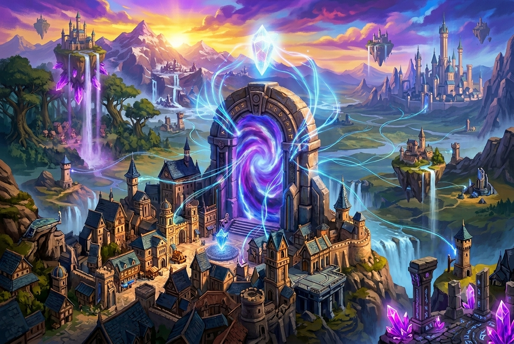

Narrative Design / Game Worldbuilding
I build worlds filled with secrets, characters shaped by their choices, and stories that unfold through play.
From dark fantasy worlds to mysteries built around forgotten truths, I explore how worldbuilding, character motivations, and meaningful player choices come together to create memorable experiences. I enjoy crafting stories that invite players to uncover secrets, question what they know, and shape the journey ahead.
Selected Worlds


Phantom Coven
The last survivor of a necromancer family seeks power in the Abyss, the very force the corrupt Solar Church condemns. Caught between the Church's golden light and the darkness they must embrace, they face a world that may already have decided they are the villain.

Sinking Regression
Betrayed and abandoned in the deep ocean, a scientist searches for strange plants that could make survival possible. Each death returns them to the beginning with their memories intact—but escaping the depths means uncovering the mystery behind their regression and the dangerous experiments hidden below.

RealmBound
Across a world of diverse fantasy civilizations, every culture draws upon the same life force: Essence. From martial arts and ritual magic to engineered constructs and evolved creatures, each civilization has developed its own way to wield it, shaping a world connected by a shared power but defined by different people and traditions.
Narrative Design Sample
A proposed stealth-escape quest sequence for Coward's Arsenal, exploring how player choices can express fear, caution, and survival instinct. This is a concept-stage sample: the scene and its outcomes are proposed designs, not shipped, playable, tested, or implemented gameplay.
Situation: The protagonist has fled the assassin organization that raised him and reaches a rain-soaked courtyard while two pursuers search for him.
Immediate Objective: Reach the service gate and escape the organization's grounds before the pursuers corner him.
Constraint: The pursuers are trained assassins. The protagonist knows that confronting them directly would put him at a serious disadvantage.
Character Focus: He is not trying to prove his bravery or defeat his pursuers. He wants to survive, so he observes the environment, weighs the risks, and chooses the route that gives him the best chance of getting away.
Scene Objective
Establish a readable stealth objective that expresses the protagonist's survival-first mindset through observation, timing, cover, and avoidance.
Intended Player Experience
The player should feel tension while understanding the available choices and feeling responsible for deciding when to wait, create a distraction, or take a risk.
Revision Rationale
Character Through Gameplay: The protagonist's cowardice is expressed through observation, environmental manipulation, and escape rather than exposition alone.
Meaningful Choice: Waiting trades time for safety, distraction trades opportunity for attention, and running trades speed for exposure.
Failure and Character Growth: Failure demonstrates the protagonist's current limitations and encourages the player to reconsider their approach rather than simply choosing aggression.
Design Trade-off: The sample prioritizes a readable stealth encounter over complex branching. The choices change the immediate outcome but do not currently create permanent story branches.
About Me
I'm Sai Srinivas Jammana, a game developer whose favourite part of the process is storytelling. Inspired by anime, manhwa, and manhua, I enjoy exploring expansive fictional worlds, imagining how they could grow, and experimenting with ideas to create stories of my own.
I'm particularly drawn to worlds that feel alive beyond their main characters, where side characters have their own motivations and established rules remain meaningful as the story unfolds. I enjoy exploring how different ideas can come together into something cohesive, especially those moments when scattered thoughts suddenly connect and reveal a new direction for a story.
Through my game development journey, I'm exploring how to turn that curiosity into experiences players can discover for themselves. I want to create stories that spark curiosity, build excitement, and make players eager to uncover what lies beyond the next mystery.
Tools & Technical Workflow
- Narrative outlining
- Quest structure
- Character development
- Worldbuilding
Game Development Experience
Independent Narrative Projects
CurrentWriter & Narrative Designer
Developing original concepts through premise design, character motivation, worldbuilding, and quest samples.
Portfolio Case Studies
In progressConcept Development
The projects on this site are clearly labeled as concepts and are not presented as shipped or playable builds.
Initiate Contact
I am open to narrative design opportunities, writing collaborations, and conversations about story-focused game projects.